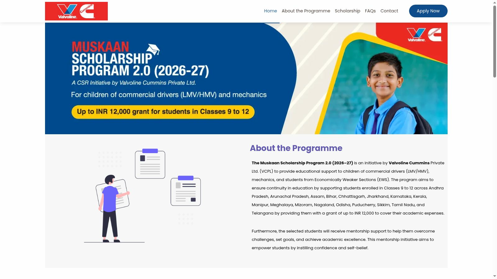
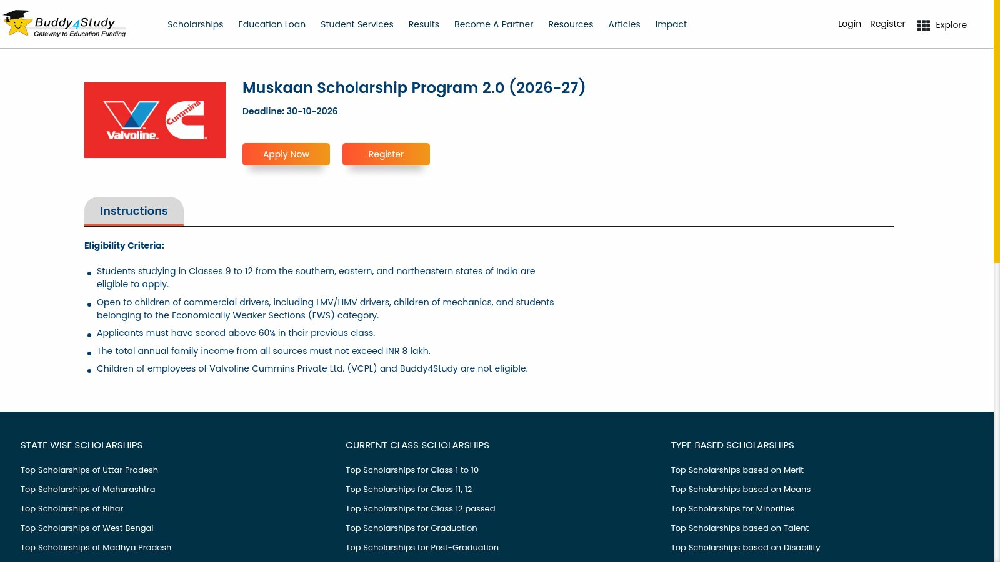

Muskaan Scholarship 2026-27: up to Rs 12,000 for Classes 9 to 12, apply by 30 October
School students in Classes 9 to 12 in 17 states, including Kerala, can apply for the Muskaan Scholarship Program 2.0 (2026-27), a CSR initiative by Valvoline Cummins Private Ltd (VCPL) for children of commercial drivers and mechanics and for students from Economically Weaker Sections (EWS). The grant is up to Rs 12,000 based on actual expenses, with mentorship support, and applications close on Friday, 30 October 2026 through the programme's official site.
Who can apply
- Students studying in Classes 9 to 12 in Andhra Pradesh, Arunachal Pradesh, Assam, Bihar, Chhattisgarh, Jharkhand, Karnataka, Kerala, Manipur, Meghalaya, Mizoram, Nagaland, Odisha, Puducherry, Sikkim, Tamil Nadu or Telangana.
- Children of commercial drivers (LMV or HMV), children of mechanics, or students belonging to the Economically Weaker Sections (EWS) category.
- At least 60% marks in the previous class.
- Total annual family income from all sources not more than Rs 8,00,000.
- Children of employees of Valvoline Cummins Private Ltd (VCPL) and Buddy4Study are not eligible.
Amount and how it is paid
- Up to Rs 12,000, paid against actual academic expenses such as tuition fees, books, uniforms and stationery. Selected students must submit fee receipts to claim the scholarship.
- If the family cannot pay the institute first, a fee letter issued by the institute can be submitted to receive the amount in advance; the final receipts must then be uploaded through the online scholar tracking system.
- The bank account must be in the applicant's own name. A parent's or guardian's account is not accepted.
- Selected students also get mentorship support, including a session on road safety.
- Renewal is possible in the next year with proof of promotion, at least 60% in the previous class and receipts for authorised education expenses, subject to availability of funds with the provider.
Key dates
- Applications for 2026-27 are open now on the official programme site.
- Deadline: Friday, 30 October 2026.
No application fee
The sponsor states that no fee is charged at any stage of the programme and that the programme is completely free. It asks applicants to report suspicious or fraudulent activity to reportfraud@buddy4study.com.
How to apply: step by step
From the official programme page and the live application page, checked 22 October 2026.
- Start from the official programme site, muskaan.valvolinecummins.com, and click "Apply Now". The button routes to the programme's official application page, run with its application partner Buddy4Study.
- Register on Buddy4Study with your email, mobile number or Google account, or log in if you already have an account.
- Open "Start Application" for the Muskaan Scholarship Program 2.0 (2026-27) and fill the multi-step form: personal details, academic information, documents, references and short subjective answers about your personal life and support needs.
- Upload the documents: Aadhaar card, current-year admission proof (fee receipt, admission letter, institution identity card or bonafide certificate), the signed and stamped original marksheet of the previous class, proof of parents' profession (commercial driving licence of the parent, Shramik Card, or an employer confirmation or self-declaration letter attested by the authority), family income proof (income proof from the Gram Panchayat, Ward Counselor or Sarpanch, or from the SDM, DM, CO or Tehsildar, or the last three months' salary slips or ITR), your bank account details and a recent passport-size photograph.
- Accept the terms and conditions, check the Preview carefully, then click Submit.


Registration and the application form sit behind a Buddy4Study login, so we could not screenshot the form's inner pages. The steps above follow the sponsor's published application process.
What happens after you apply
- Shortlisting based on the eligibility criteria and socio-economic status.
- Document verification and telephonic interaction with applicants.
- Panel interviews over Zoom and at offline Muskaan camps.
- Final approval by the scholarship provider, after which scholars are onboarded and the amount is disbursed against the actual expenses submitted.
Video guides
We could not find an official English or Malayalam application video for the 2026-27 cycle on Valvoline Cummins' or Buddy4Study's channels. The written application instructions on the official programme page are in English.
Help and contact
Phone 011-430-92248 (extension 346), Monday to Friday, 10:00 AM to 6:00 PM. Email muskaanscholarship@buddy4study.com.
Sources: Muskaan Scholarship Program official site (Valvoline Cummins) · Official application instruction page · Programme listing on Buddy4Study (application partner). Checked 22 October 2026. Explainer by AiCoN - not an official Valvoline Cummins publication. Details can change; check the official page before you apply.